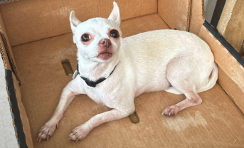

BILA305: Miami-Dade Lost & Found Pet Guidelines
The community's shared protocol for lost and found dogs and cats in Miami-Dade County.

About BILA305
Community Guidelines on Helping Pets Find Their Way Back Home
One evening, a tiny chihuahua appeared outside the front gate — alone, limping, no microchip, clearly lost. There was a tag, but no owner information. That dog's name turned out to be BILA.
BILA was eventually reunited with her family. But the process of getting her home was harder than it should have been — not because the resources didn't exist, but because nobody could agree on what to do first. Forty people offered advice, but it was overwhelming. It made me wonder: if someone with no experience found or lost a pet, how would they even begin to navigate?
That experience made something clear: this is an information problem, not a resource problem.
After a firsthand stressful experience and researching the issue — including a qualitative and social media analysis of challenges faced with lost and found pet posts — a pattern emerged. Good Samaritans were trying their best, but without a shared protocol, reunions that should have taken hours took days. Some never happened at all.
BILA305 was built to fix that. These guidelines exist so that the next time someone finds a lost pet or loses their own, they have a clear, step-by-step path forward — grounded in Miami-Dade County's actual legal requirements and the platforms that actually work.
Named after BILA. Built for the community. 305.
Resource Hub
Browse tools, prevention tips, and ways to help.